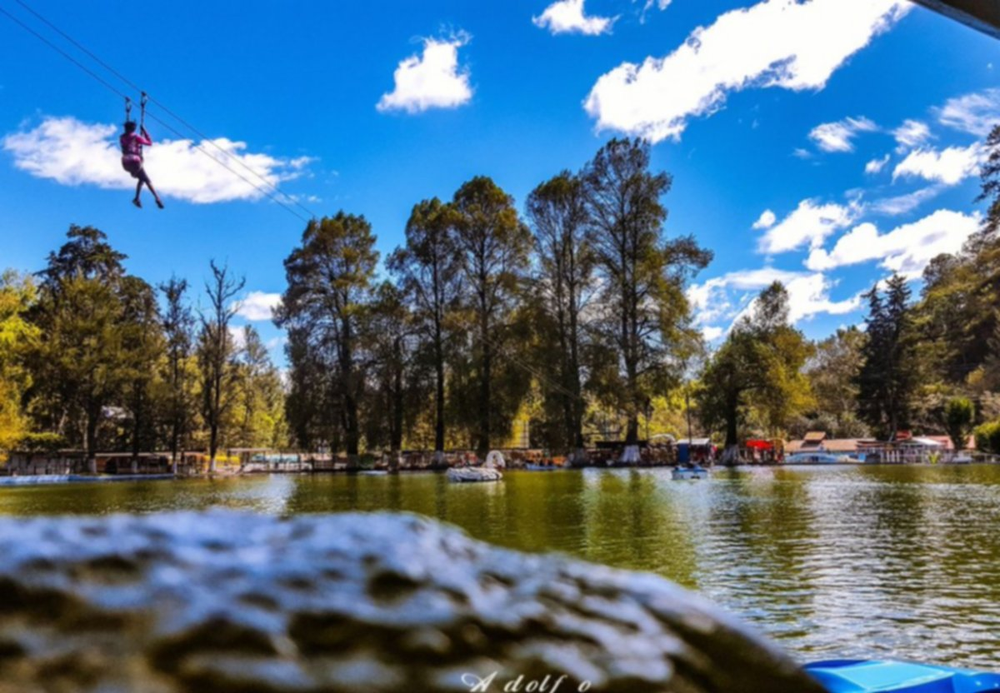
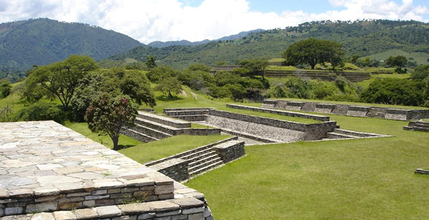
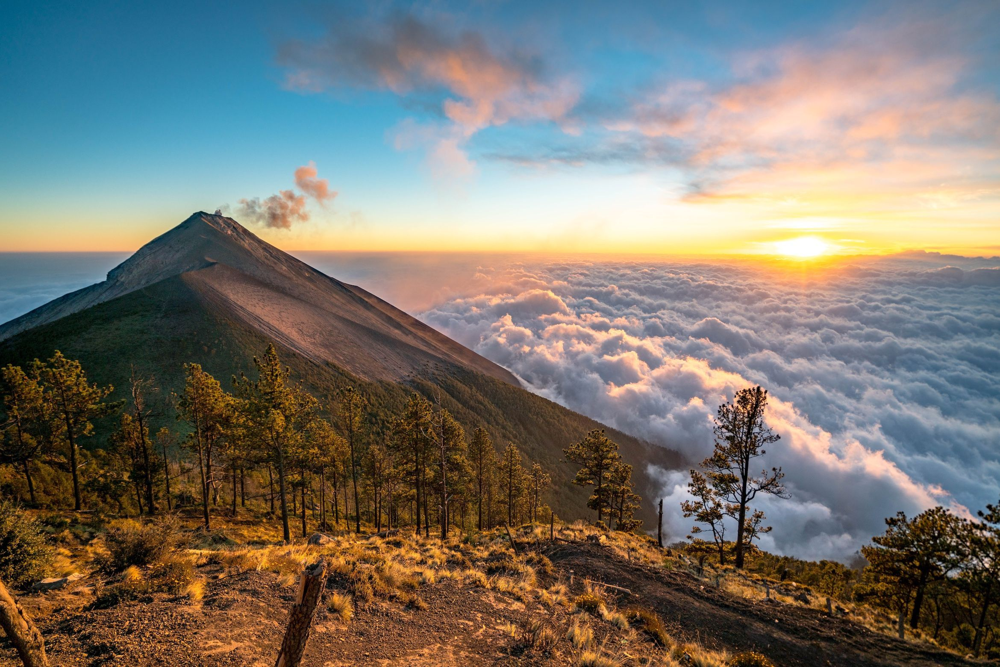
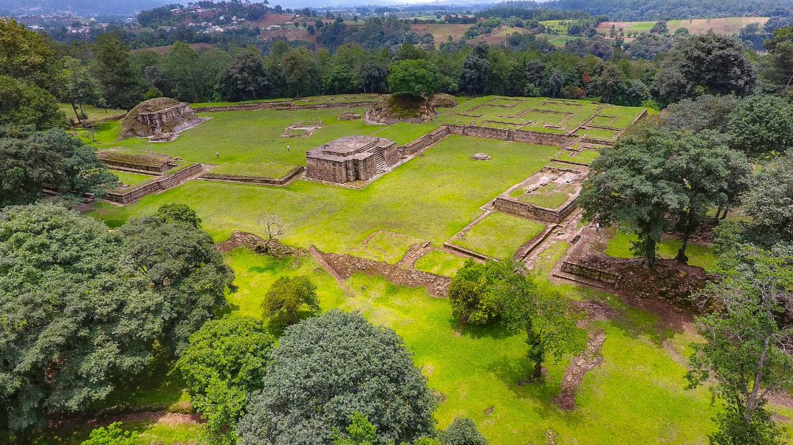
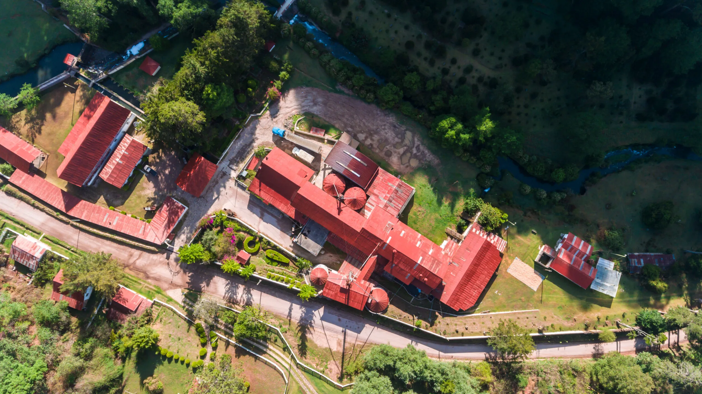

En 1462 el grupo cakchiquel se separó del dominio k’iché y fundó su capital en una nueva región, en el lugar llamado
Iximché. Más tarde, colonizada por los españoles, se le conoció como la Provincia de Chimaltenango.Se atribuye a Don
Pedro de Portocarrero la fundación de la cabecera departamental de Chimaltenango en 1526. Durante 1825 Chimaltenango y
Sacatepéquez formaban un solo departamento. Fue hasta el 12 de septiembre de 1839 cuando la Asamblea Constituyente los
dividió.
Está ubicado en la región Central de la República de Guatemala. a 52 km de la Ciudad de Guatemala en la República de Guatemala.
1 / 5

Parque Nacional los Aposentos
Cuenta con una gran pileta en donde encontrarás distintas canoas, patos y cisnes. Lo mejor es que tienen muchas opciones de entretenimiento y servicios, desde churrasqueras hasta un canopy que atraviesa la laguneta.
2 / 5

Mixco Viejo Parque Arqueológico
Es un sitio arqueológico maya que fue una de las ciudades más importantes de la civilización maya. Puedes explorar las ruinas, aprender sobre la historia y disfrutar de vistas panorámicas. Se encuentra en el municipio de San Martín Jilotepeque, Chimaltenango.
3 / 5

Volcán Acatenango
Es un volcán activo que ofrece una experiencia de senderismo única. Puedes subir hasta la cima para disfrutar de vistas impresionantes y, si tienes suerte, ver erupciones del volcán Fuego cercano. Se encuentra en el municipio de Acatenango, Chimaltenango.
4 / 5

Sitio Arqueológico Iximché
Es un sitio arqueológico maya que fue la capital del reino cakchiquel. Puedes explorar las ruinas, aprender sobre la historia y disfrutar de la belleza natural de la zona. Se encuentra en el municipio de Tecpán Guatemala, Chimaltenango.
5 / 5

Casa Xara y Molino
Esta casa ofrece una experiencia única. Anteriormente una finca familiar que funcionaba como molino de trigo desde
1924, en 2005 se transformó en un conjunto de casas conocido como Casa Xara, en honor al nombre Kaqchikel de un ave
local.
❮
❯